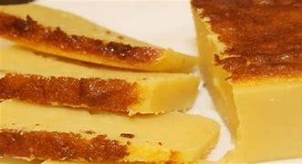

Hoje vamos te ensinar a fazer um Bolo de Leite muito facil e simples.
Em um liquidificador adicione 3 ovos, 1/2 xíc. de açúcar, e 1/2 colher de sopa de manteiga. Bata tudo por 1 minuto.
Agora adicione junto no liquidificador 400 ml de leite, e 395 g de leite condensado. Bata por mais 1 minuto.
Adicionando farinha de trigo abra a tampa do liquidificador e vá adicionando aos poucos 1 xíc. de farinha de trigo 240 ml. Bata tudo até que tudo fique homogêneo.
Enformar:
Despeje toda a massa do liquidificador em uma forma já untada com manteiga, leve ao forno pré-aquecido 180ºC por aproximadamente 45 minutos.
Desenformar:
Após assar, retire do forno e espere esfriar um pouco em temperatura ambiente. Depois desenforme com cuidado em um prato bem bonito.
Pronto:
Está pronto nosso delicioso bolo de leite com leite condensado. Agora é só se servir e se deliciar com essa sobremesa maravilhosa.